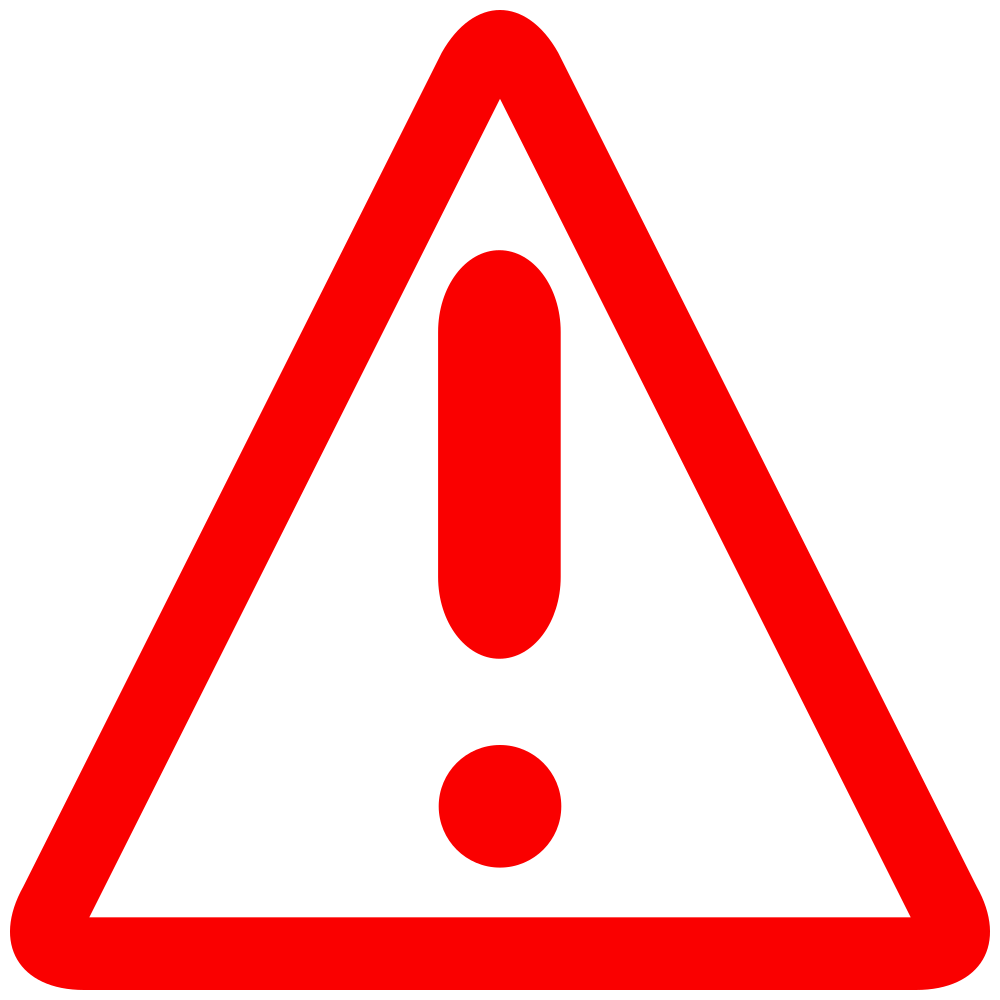

 Disclaimer : people around the world are sharing the nice spots they found, please don't deteriorate them. While visiting the places and diving, please make sure to leave it clean, this is important for the nature and for the next people that will come after you. If you find some waste when arriving, feel free to collect it and bring it to the nearest bin of course !
Thank you for your participation !
Also, if you are new to cliff diving, make sure to check the safety measures at the bottom of this page.
Found a new spot ? Add it to the map !